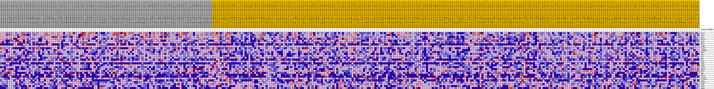
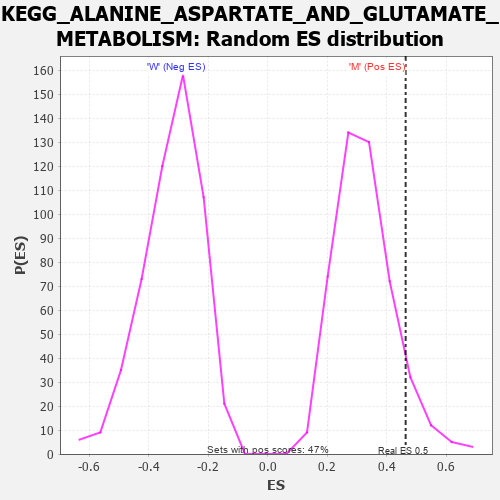

Profile of the Running ES Score & Positions of GeneSet Members on the Rank Ordered List
| Dataset | MUC16.MUC16.cls#M_versus_W.MUC16.cls#M_versus_W_repos |
| Phenotype | MUC16.cls#M_versus_W_repos |
| Upregulated in class | M |
| GeneSet | KEGG_ALANINE_ASPARTATE_AND_GLUTAMATE_METABOLISM |
| Enrichment Score (ES) | 0.46407166 |
| Normalized Enrichment Score (NES) | 1.419722 |
| Nominal p-value | 0.08492569 |
| FDR q-value | 0.2517686 |
| FWER p-Value | 0.858 |
| PROBE | DESCRIPTION (from dataset) | GENE SYMBOL | GENE_TITLE | RANK IN GENE LIST | RANK METRIC SCORE | RUNNING ES | CORE ENRICHMENT | |
|---|---|---|---|---|---|---|---|---|
| 1 | PPAT | na | 14 | 0.282 | 0.1331 | Yes | ||
| 2 | GOT2 | na | 570 | 0.175 | 0.2056 | Yes | ||
| 3 | CAD | na | 590 | 0.173 | 0.2871 | Yes | ||
| 4 | GFPT1 | na | 637 | 0.171 | 0.3669 | Yes | ||
| 5 | GLS2 | na | 1544 | 0.130 | 0.4121 | Yes | ||
| 6 | GOT1 | na | 2211 | 0.111 | 0.4526 | Yes | ||
| 7 | CPS1 | na | 3788 | 0.085 | 0.4641 | Yes | ||
| 8 | GLUD1 | na | 6539 | 0.053 | 0.4394 | No | ||
| 9 | IL4I1 | na | 8283 | 0.039 | 0.4262 | No | ||
| 10 | ALDH5A1 | na | 8961 | 0.033 | 0.4295 | No | ||
| 11 | GPT2 | na | 9208 | 0.031 | 0.4398 | No | ||
| 12 | ASS1 | na | 9780 | 0.027 | 0.4420 | No | ||
| 13 | ASL | na | 10534 | 0.021 | 0.4382 | No | ||
| 14 | GLS | na | 10749 | 0.019 | 0.4435 | No | ||
| 15 | GPT | na | 10750 | 0.019 | 0.4527 | No | ||
| 16 | ADSL | na | 11266 | 0.016 | 0.4508 | No | ||
| 17 | GAD2 | na | 11844 | 0.012 | 0.4461 | No | ||
| 18 | ASNS | na | 12476 | 0.008 | 0.4384 | No | ||
| 19 | ACY3 | na | 12916 | 0.005 | 0.4328 | No | ||
| 20 | GFPT2 | na | 13344 | 0.002 | 0.4262 | No | ||
| 21 | NIT2 | na | 17502 | -0.013 | 0.3570 | No | ||
| 22 | DDO | na | 19704 | -0.024 | 0.3285 | No | ||
| 23 | AGXT | na | 20045 | -0.025 | 0.3342 | No | ||
| 24 | AGXT2 | na | 21281 | -0.031 | 0.3265 | No | ||
| 25 | ALDH4A1 | na | 24736 | -0.045 | 0.2853 | No | ||
| 26 | GAD1 | na | 25284 | -0.047 | 0.2977 | No | ||
| 27 | GLUD2 | na | 33675 | -0.076 | 0.1816 | No | ||
| 28 | GLUL | na | 35697 | -0.082 | 0.1836 | No | ||
| 29 | ABAT | na | 47120 | -0.123 | 0.0349 | No | ||
| 30 | ASPA | na | 55017 | -0.238 | 0.0045 | No |

